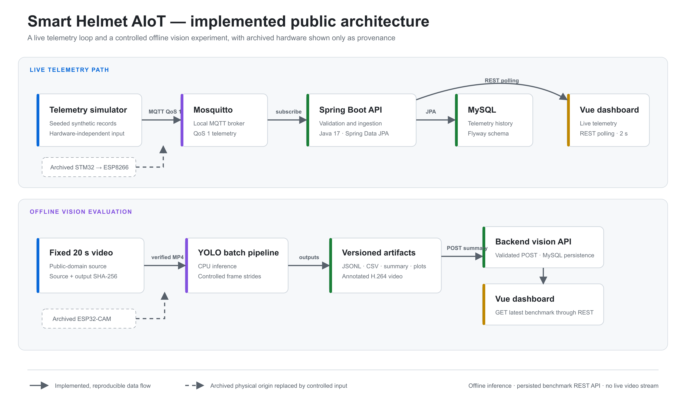
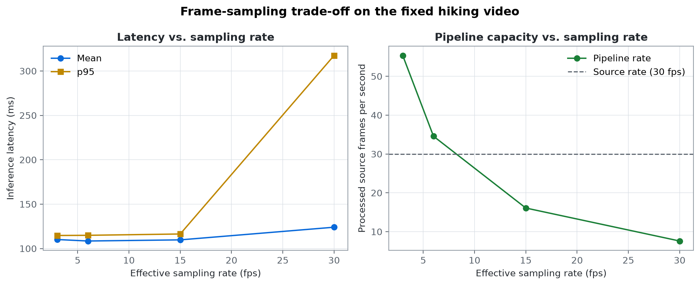
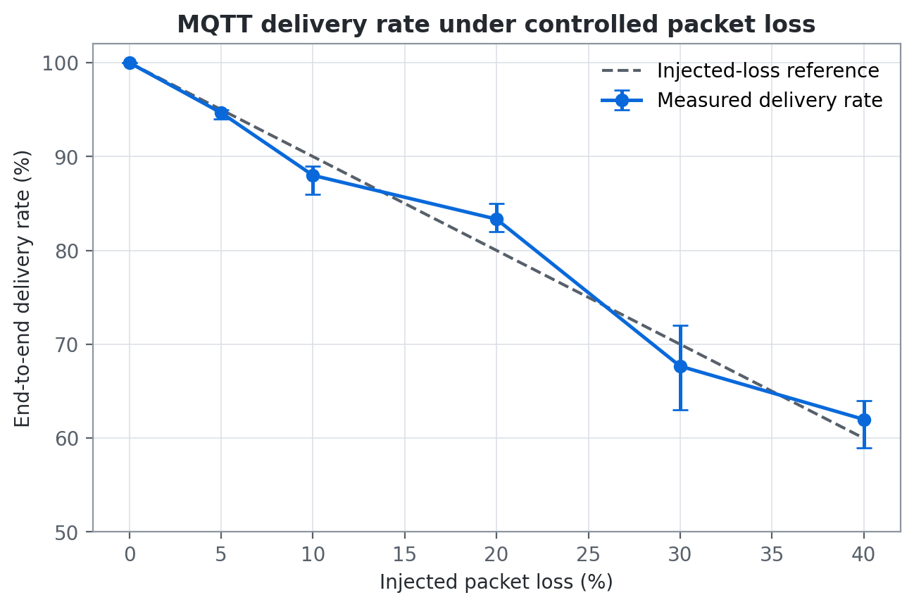
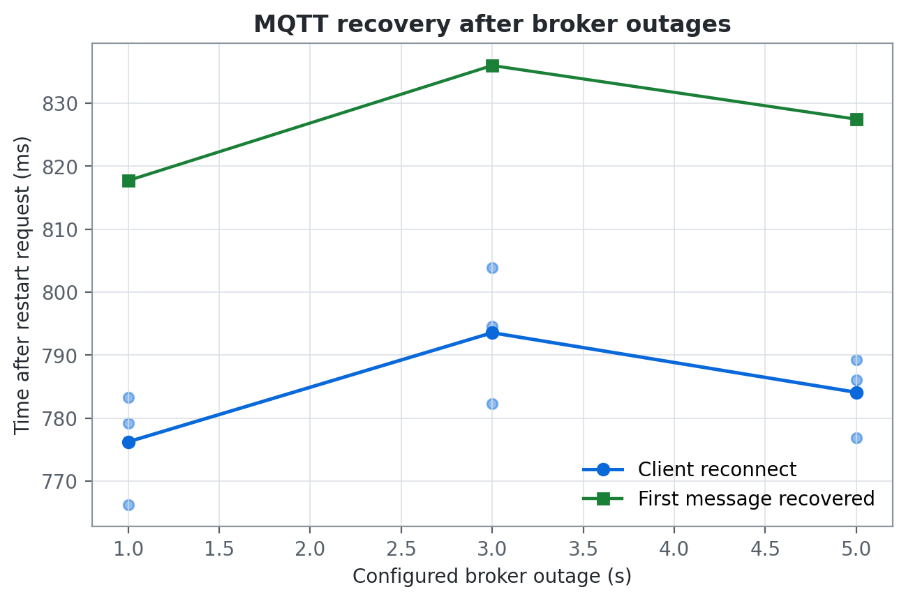

Telemetry
Simulator or ESP8266 input passes through MQTT, Spring Boot, MySQL, and REST to the Vue dashboard.
input → MQTT → API → MySQL → dashboard
Reproducible edge-to-cloud research prototype
A smart-helmet testbed for latency, throughput, detection continuity, and network reliability.

The public workflow separates hardware provenance from reproducible evaluation, then joins both result paths at the backend API.
Simulator or ESP8266 input passes through MQTT, Spring Boot, MySQL, and REST to the Vue dashboard.
input → MQTT → API → MySQL → dashboard
A SHA-256 verified clip runs through YOLO11n, publishes its benchmark, and appears in the same dashboard.
video → inference → POST → MySQL → dashboard
Raw measurements, plotting scripts, and publication-ready figures are versioned together.



The project reports system behavior only. Detection continuity is not precision or recall, and the prototype is not a medical or certified safety device.
Docker Compose starts the broker, database, backend, and dashboard. Simulators keep the evaluation hardware-independent.
Read the validation reportgit clone https://github.com/Kettkk/smart-helmet-aiot.git
cd smart-helmet-aiot
cp .env.example .env
docker compose up --build -d
./scripts/smoke-test.sh